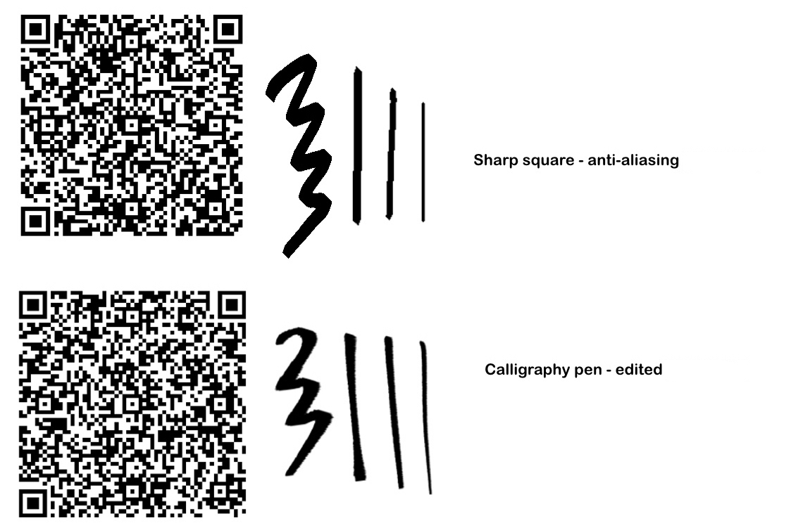
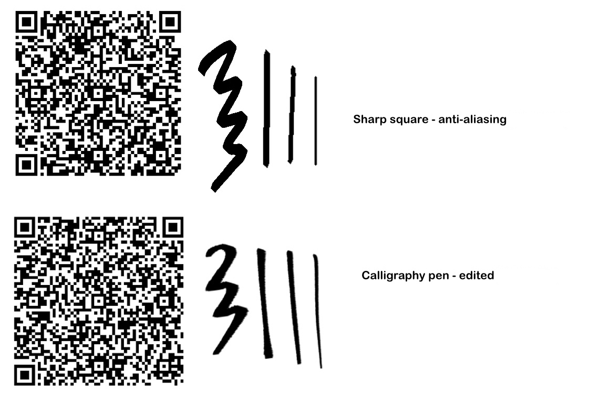

◊INFO
contents: [ sitemap | schedule | abt me | abt art | links | mascots ]

Abt Site Navigation
Abt Posting / Update Schedule?
updates come in bi-monthly batches with no specific dates. done exclusively to prevent burnout via forced hiatus
you can expect an explosion-sized content-drop once in a blue moon, and then complete radio silence till the next batch comes around~
Abt Me
ember sācher's my penname. inout of consciousness since '03, and a hobbyist OC artist & wannabe comic creator on the sidelines. strictly of the self-indulgent variety.
i'd like these creations of mine to be the site's main focus, and so the specifics of myself and my identity will be but a mere vague presence here *-* you may peek at inspos, however, in the "favorites" tab & find site updates on the site profile :)

Trivia?!??!?!??!
where does the name "ember sācher" come from, anyhow? (a ramble on pronounciations and inspirations)
fun trivia if anyone rly wants to know--!
my penname is inspired by the band, “alice schach and the magic orchestra” ! i rather impulsively decided i wanted to pay tribute to them somehow :} thus, naming myself vaguely off of their sound. schach —> sācher 😋
normally "sacher" is not meant to have the hard ā over it, but i'm evil and decided to pronounce it like "say-share."
current interests????
what occupies my mind when im not doing.. this *-*
- god of war franchise ☆
- metal gear franchise
- dungeon meshi
- QUALIA AUTOMATA!!!!!!
- danganronpa (vaguely)
- QSMP (main POVs: philza & fitMC)
- O....OCTs................
- BIRDS!!!!!! all kinds of birds :D :D :DDD
Abt the Art
for my digital art, i use ibispaint and my phone to draw. im still looking for an ibis brush that perfectly replicates the mspaint marker, that thing is my bread and butter.
a list of my tools and brushes:
(ibis only)
lineart
 

as for sketching, i use the default 'ruling pen' brush on 30% opacity. all of the memes in this post were done w this method.
rendering

OH AND THE LASSO TOOL !!! DONT FORGET ABT THE LASSO TOOL THAT SHITS ESSENTIAL.
these brushes are ASS for blending, so don't grab them if that's what you want. consider them dry brushes that come with minor color variation. color-picking the variants and slow layering is mainly how i go about rendering with these things. but hey who am i to police.
for gradients, soft shading, and the like, i have a modified 'pen (fade)' brush.
Abt OC projects?
ahyes, the subject of my arts and why i draw.
to elaborate on the content of my art itself a lil, i'm workin on some multi-media, kinda-comics, mostly-not, story projects for my OCs (in their conceptual stages & not hosted here). the majority of the characters you'll see in my artblog are from my main projects as i am developing them:
- Paradise's Tragicomedy (PTC) & Another Misadventure (AM)
for basic introductions to the projects and characters, you can check the OC page or browse my artfight profile for some elaboration.

regardless, if a character shows up, their name will be linked in that artwork's commentary section - although knowledge of the character/their project is definitely not needed to consume what's posted here. just some fun trivia!
Links
my links
- if you spot any technical issues with the site or would just like to ask a question, you may msg me on discord at embrrrr [REMEMBER: IT'S **FOUR** R's]
- my neocities site profile
- i'm also on artfight, but that's about it.
personal site directory
sites that i enjoy! whether that be for their artwork or for their words. a select few of these sites vaguely inspired my own as well :D


my button: *-*


Abt the Mascots
the silly little guys in the sidebar icon, and the ocs that inspired the look of the site :D

GIOMI !! light mode mascot & also the the protagonist to PTC. living doll archivist lady in search of her missing memories. a sweetheart, really.

anton! dark mode mascot and misc minor antagonist. put his heart inside a robot so he could run his company even after death.
will add more to the info page when i think of it.